ICON GENERATOR | version 1.05
Last mod.: 2022/12/29
Introduction
This asset allows you to create icons for objects in your game. It works with static meshes, skeletal meshes or blueprint actors. With several customization options, it is possible to create icons with or without background (transparent, solid color or a chosen texture), with or without foreground (chosen texture). They can be loaded via data tables, autosearch load (loading all the assets in the project, via folder scanning) or you can specify the folders your assets are in (via folder scanning).
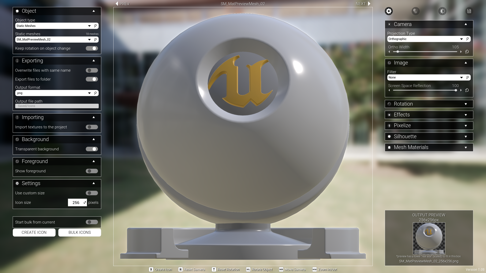
background texture |
transparent background |
color background |
foreground + no background |
foreground + background |
|---|---|---|---|---|
You can export icons (.png, .jpg, .TGA and other output formats) or/and import them automatically into your project (.uasset).
Getting started
Unreal library
First of all, download and add it to your project. You can find it in your Unreal Engine Library.
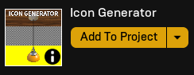
Setup
After adding the asset to your project, open the M_IconSetup map. It can be found in: Content → Icon Generator → Maps.

Once in the map level, you’ll need to choose the load method. You have three options:
- Load assets using data tables;
- Load all assets in the project (via folder scanning);
- Load assets inside specific folders (via folder scanning).
To change between them, click in the blueprint in the level (the one with a red arrow, IconGeneratorStartPoint). Then, in the details panel, you'll see an exposed variable called Load Method. Changing this variable will affect the way that the objects are searched.
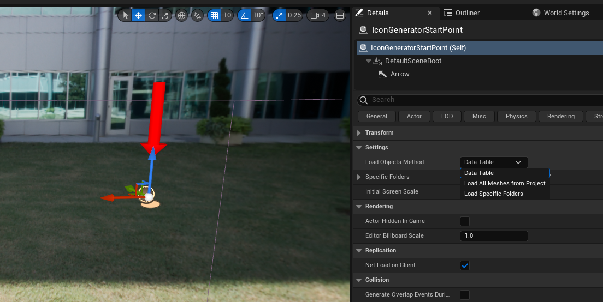
If you just want to see all of your meshes without further reading, select the load method Load all and hit play (this method still loads blueprints actors from a data table, the autosearch includes static meshes and skeletal meshes only). But if you want to know how each option works, let’s check it below (please, make sure to read the #washed-colors section).
Loading method: data tables
This load method is interesting for those who want to have control over the loaded list, with specific objects. To use it, set the Load Method variable to Data Table.
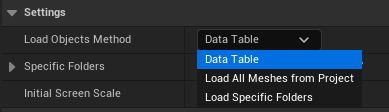
Now, all the objects will be loaded from data tables, located in Content → Icon Generator → DataTables. They are: DT_StaticMeshes, DT_SkeletalMeshes and DT_Blueprints. Please, note that these data tables includes items from the demo folder. If you want to delete these items, make sure to remove them from the data table. EDIT may 2024: this video shows how you can remove the entire demo folder.
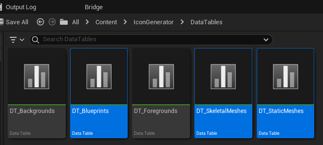
Tip: How to add itens to the data table
To add a new item to one of the data tables, open the one with the object type you want. Click on the + signal at the top. Then, select the row created and add the info. In the DT_SkeletalMeshes data table, you have an extra information: animations. You can add them manually for the skeleton you're adding or, alternatively, leave it empty (there is a toggle in the Icon Generator to autosearch animations in your project that are compatible with the current selected skeleton -- you can read more about it in the #animations section).
Loading method: load all
This is the easiest way to load your assets (Static Meshes and Skeletal Meshes). This method still loads blueprints from the DT_Blueprints data table (located in Content → Icon Generator → DataTables). It doesn't load all the assets in memory at once, as the name suggests. So there is no impact on performance: the objects are loaded only when called/needed (and unloaded if not), no matter how many objects you have on your project.
To use it, set the load method to Load All Meshes from Project.
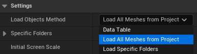
As mentioned before, this method still loads blueprints actors from the DT_Blueprints data table.
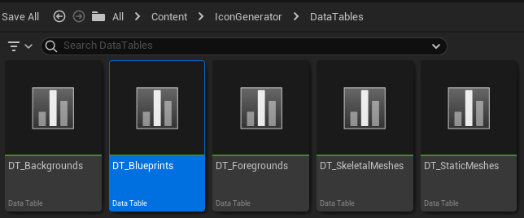
The skeletal meshes animations can be loaded using a toggle in the Icon Generator. It autosearches animations in your project that are compatible with the current selected skeleton (more about it in the #animations section).
Loading method: load folder
This load method is very similar to the previous one (it loads Static Meshes and Skeletal Meshes – blueprint actors are still loaded from the DT_Blueprints data table). The difference is that in this method, you can specify which folders your assets are in. It uses a recursive search, so if you have subfolders inside this folder, these folders will also be searched.
To use it, set the load method to Load Specific Folders.
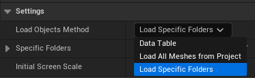
Then, right below the load method, there is the array Specific Folders. Here you can add one or more folder paths to search your meshes. The default value is /Content/, meaning that it will search your entire Content folder, similar to the previous method but without the engine assets.
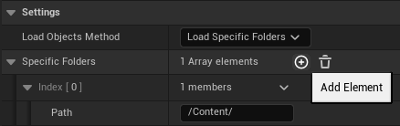
Example: adding a specific folder
As an example, let's say we want to load the assets that are in Content → MyFolder → MyAssets. Then, all we need to do is to change the path to /Content/MyFolder/MyAssets. That way, only assets in this folder (and subfolders) will be loaded. If you want to add more than one folder (if it is in a different path, for example), just hit the + button in the array and add as many paths you want!
Washed colors correction
If you’re using the import icon to the project option (the one where automatically imports the texture to your project), the icon generated will look just fine when you open it, but it can show a washed color when inside widgets:
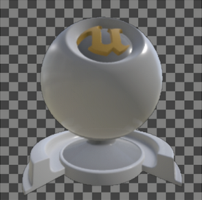 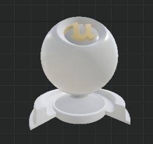
It is noticeable that the widget viewer shows an icon with a washed color. There is, however, a simple fix: you just need to check the sRGB checkbox in the texture viewer (marking it as true).
After the sRGB fix, the texture appearance will look as it should in the widget viewer and you'll be able to save it.
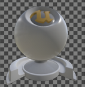 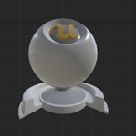
Tip: If you have more than one texture, you don’t need to apply sRGB one by one.
It is possible to do it with all textures at once. Select all textures you want to apply the sRGB, right click over one of them, go to Asset Actions, then Bulk Edit via Property Matrix.
Then, in the opened window, expand the texture section and mark sRGB as true. So, all the textures selected will be changed to sRGB at once!
Below you can see this window in UE4 and UE5.
Animations
You can load animations for your skeletal meshes and create icons of its poses. There are two ways to do this.
The first and easiest is by enabling the toggle Autosearch valid animations in the Animations tab (this tab appears after selecting the object type Skeletal Meshes). This toggle is available from version 1.05 above (marked at the bottom right corner).
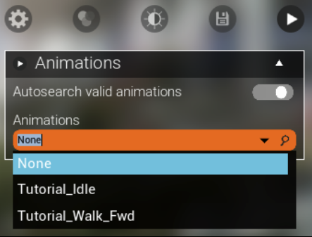
All the animations of the selected skeletal mesh will appear in the Animations combobox. If the selected skeletal mesh doesn't have animations, only the None value will show up.
The second method is via data table. First you need to choose the load method Data Table. Then, you can choose animations in the DT_SkeletalMeshes data table. You’ll find these animations in the animations tab as showed in the image above (if the toggle is marked as false and the selected skeleton has animations in the data table).
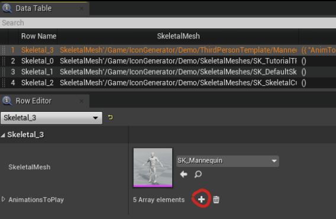
Notice that the toggle is still there, so you can also mark it as true to load animations even in the Data Table load method.
Both methods support animation sequences and anim montages.
Export vs Import
Both located on the left panel of the Icon Generator, their names can cause confusion.
Export
The export function is used to create and export an external image file (.png, .jpg, .TGA etc). The file will not appear on the editor content folder. If you're using the default path (which is Your Project → Saved → Icons), you need to navigate to this folder to see the icon.
Alternatively, you can set a path of your choice in the output file path field (note that this field requires an absolute path, as example: C:\User\Documents\MyExampleFolder).
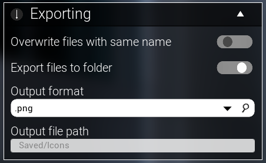
This functions allows you to create icons in any size. Power of two is not a requirement.
Import
The import function is used to create an .uasset texture file that will appear in your content folder, and you'll be able to see it inside the editor. You can imagine it as a shortcut of exporting an icon and then importing it manually to the project (as we normally do with textures). Make sure to apply the sRGB fix (#washed-colors-correction section), otherwise the icon create will not be saved.
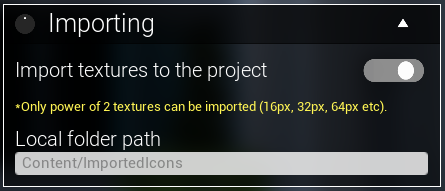
But the importing function has a limitation. Only power of two icons can be created (unfortunately I can’t change this, it is an internal function of the Unreal Engine).
Power of two sizes
These are valid icon sizes: 16x16, 32x16, 2048x1024, etc.
And these are invalid icon sizes: 79x16, 34x34, 2000x1000, 32x25, etc.
In summary, the numbers must be \(2^n\). Examples:
- \(2^4 = 16\)
- \(2^5 = 32\)
- \(2^6 = 64\)
- \(2^7 = 128\)
- \(...\)
So these are valid power of two sizes, defined by \(2s\) x \(2t\), where \(s\) and \(t\) are positive integer numbers.
You can also choose a path to save your icons in the Local Folder Path textbox, but note that in this case you have to choose a relative path, as example: Content/MyRandomFolder/MyIcons.
Background and foreground
You can add your own custom background/foreground textures and/or remove the starter textures. To do this, open the DT_Backgrounds for backgrounds and DT_Foregrounds for foregrounds, both located in Content → Icon Generator → Data Tables.
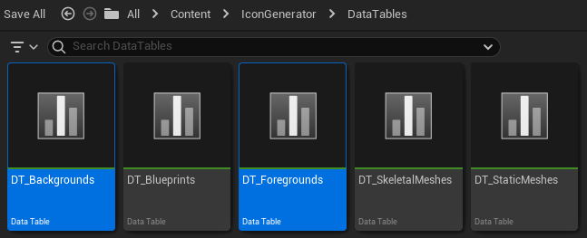
The content chosen in the DT_Backgrounds data table will appear inside the backgrounds box (if you mark the toggle transparent background as false and select the background type as Texture, otherwise it will be hidden).
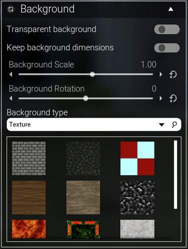
The content chosen in the DT_Foregrounds data table will appear inside the foregrounds box (if you mark the toggle show foreground as true, otherwise it will be hidden).
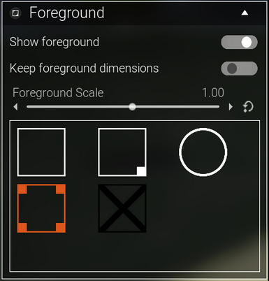
Bulk icons
Icon Generator has a button to bulk icons. This bulk creates icons for each object you have of the current object type selected. You have the option to start the bulk from the current object (toggle Start bulk from current).
You may notice that some assets can take a few seconds to be fully loaded (material and LOD), depending on your machine and the object complexity. Some cases, objects do not have enough time to render properly before the icon generation occurs (the time between the current object and the next, when the icon is created). The object is loaded only when called to appear in the screen (resulting in a optmized application, once you don't need to wait several minutes to start using it or to have a list of all objects).
If you need more time for each icon (to wait it load properly), it is possible to increase this "wait" time in the bulk export (of course, increasing it will result in more time to complete the bulk for all). To increase it, you can follow this tutorial video or the steps below.
Open the UI_ObjectRender widget, located at Content → IconGenerator → Widgets.
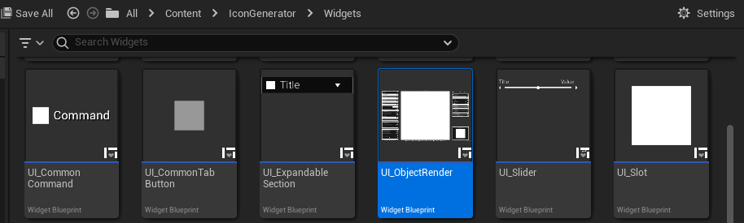
At the top right corner, click on Graph to open the widget blueprint. Then, in the variables panel, open the section EDITABLE. Here you'll see some variables to customize. For this section, the importants are BulkDelayPerMesh and BulkDelayPerBlueprint. Increase these variables values to have more time for each object be properly loaded based on your machine. The greater this value, the greater will be the total time to bulk all (this time x total objects to bulk).
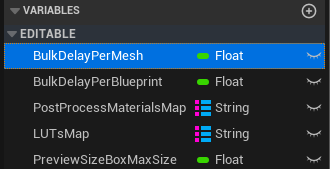
Post process and filters
You can add or remove post process and filters from Icon Generator. To do this, follow the steps below or this video (for post process) and/or this video (for filters -- LUTs).
Open the UI_ObjectRender widget, located at Content → IconGenerator → Widgets. At the top right corner, click on Graph to open the widget blueprint. Then, in the variables panel, open the section EDITABLE. Here you'll see some variables to customize. For this section, the importants are PostProcessMaterialsMap and LUTsMap. Click in one of them to start the customization. You'll see a map variable, where the left side is the name that will appear at right side panel of the Icon Generator (each name must be unique). And the right side of the map is a LUT or a Post Process, depending on the selected variable. You can add your own post process materials or LUTs here (or delete them).
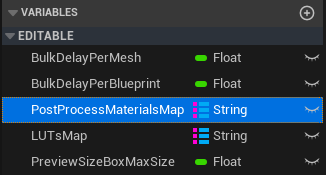
Controls
Icon Generator has some input controls:
Key |
Action/Description |
|---|---|
| Left mouse button | Click and hold over the object. Move the mouse to rotate. |
| Right mouse button | Click and hold over the object. Move the mouse to move the camera position. |
| W, A, S and D | Press one of them to move the camera position. |
| Mouse scroll | Zoom in/out (camera movement in the object direction). |
| X | Creates the icon of the current object (shortcut). |
| R | Resets the camera position (shortcut). |
| T | Resets the object rotation (shortcut). |
Update log
-
Update 1.05
Update 1.05 changes
- Added foreground option;
- Autosearch for animations (it searches animations for each skeleton without impact on performance or memory usage);
- Ambient occlusion support;
- Controls for the main light;
- Version is now showed at the bottom right corner.
-
Update 1.04
Update 1.04 changes
Added “move camera” using the mouse right button. Keys WASD keep working for the same function.
-
Update 1.03
Update 1.03 changes
- Orthographic camera option;
- Improved pixel effect;
- Silhouette option;
- Improved item placement on screen;
- New background approach (using material instead of a world object);
- Performance optimization;
- Option to apply (or not) pixel effect on background;
- Background no more reflecting on the object;
- General adjustments on UI.
-
Update 1.02
Update 1.02 changes
Added a box to change the mesh materials (works with static meshes and skeletal meshes). You can check a preview here.
-
Update 1.01
Update 1.01 changes
Added a searchable box. You can see how it works here.
Questions and Answers
What kind of objects can I use to create icons with this tool?
You can create icons for static meshes, skeletal meshes and blueprints actors.
Does this asset support Post Process?
Yes, it does, for both transparent or non-transparent backgrounds. Some post process variables are exposed using sliders (like saturation, contrast, gamma, post process materials, LUTs etc), but you can also edit the post process manually as you want editing the post process volume in the level.
I'm using the Import textures to the project function/toggle, and my last icons are disappearing after closing the editor. Why?
You'll be able to save the imported textures only if you edit the texture in some way, like the sRGB fix. Note that after creating the icon, there is no prompt to save it when you try to close the editor. But if you apply the sRGB fix shown at the #washed-colors-correction section, you'll be able to save the file and only then an .uasset will be generated, as shown in this video.
I’m using UE5.1 and the objects looks transparent in the viewport and the icon comes out totally black. How do I fix this?
Unreal Engine 5.1 included the alpha composite in the “cinematic” setting to be properly rendered (which is a regression compared to previous versions of the engine, the issues was reported to the epic team). And we need to use alpha composite.
That means you need to set the scalability option Effects to Cinematic. Here is a video showing how you can do it. If you downloded Icon Generator from your Unreal Engine library after 2023-06-01, the asset code changes this scalability setting automatically (and brings the original value back to default after closing the level).
Every time I close the Icon Generator on Unreal Engine 5.1, it loads some shaders again. Why does this happen? There is a way to avoid this?
This happens because of the previous question: UE5.1 introduced an issue where the alpha composite appears only if the Effects quality is set to Cinematic (and, in some computers, Epic quality is enough).
So the project in UE5.1 changes it to “Cinematic” automatically when you hit play, and turns it back to its default when closing. To avoid the shaders recompiling, you can try this (setting to cinematic) and the loading will happen only once, as it will be changed from cinematic to cinematic (so no changes to be compiled).
I’m using the Import textures to the project function/toggle. When I use the texture generated on a widget, it looks washed. How can I fix this?
When the Unreal Editor generates the texture (in this case, specifically the importing function and not the export one), for some reason the “sRGB” checkbox is marked as false by default, so the color looks washed because of that (even if I set it to sRGB true in the code, the color will show up washed, that’s why the following process needs to be done manually).
So, to fix it, you need to mark the sRGB checkbox as true in the texture details panel. If you have more than one texture, it is possible to do it all at once – the documentation video shows how to do that (or you can check the #washed-colors-correction section), starting at 5min 22s (this link).
This asset can create textures with custom size?
Yes! You just need to mark the custom size toggle as true and an extra box will show up to insert the custom size.
I’m trying to export my texture using the Export toggle option, but the texture is not being generated (it says “done” but I can’t find it).
For an odd reason some projects do not allow you to generate a new folder within the Project/Saved folder. By default the Icon Generator saves your exported icons within the Project/Saved/Icons folder (it creates a new folder within Project/Saved).
If you're getting this issue, I recommend that you change the default output path in the Output file path field. As example, you can set the value as C:\Users\YourUser\Downloads\ExampleFolder. Any valid path can be used to export icons!
I’m trying to import my texture using the Import toggle option, but the texture is not being generated (it says “done” but I can’t find it).
Only power of two can be imported using the Import toggle (unfortunately I can’t change this, it is an internal function of the Unreal Engine).
These are valid icon sizes: 16x16, 32x16, 2048x1024, etc.
And these are invalid icon sizes: 79x16, 34x34, 2000x1000, 32x25, etc.
In summary, the numbers must be \(2^n\). Examples:
- \(2^4 = 16\)
- \(2^5 = 32\)
- \(2^6 = 64\)
- \(2^7 = 128\)
- \(...\)
So these are valid power of two sizes, defined by \(2s\) x \(2t\), where \(s\) and \(t\) are positive integer numbers.
How can I increase the bulk delay per object? The current time is not enough to load the textures on my machine.
You can increase the float variable bulk delay per mesh of the UI_ObjectRender widget. Take a look at the #bulk-icons section for more details about increasing the bulk delay.
I get an error when spawning my blueprint and closing the icon generator level.
You’ll get red errors only if your blueprint depends on any reference that is not in the level. For example, if your blueprint needs the reference of a specific actor (let’s say a health potion blueprint needs the player_character_3 reference), as the actor is not in the level, the reference will be null, so if the blueprint needs that reference in any point, it will show you an error. In any case, you don’t need to edit your blueprints, the error will not cause you any problems to generate the icons (of course, as long as its visual is not dependent on other actors).